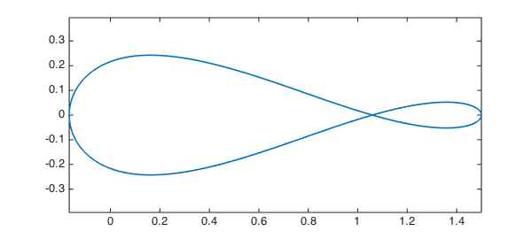
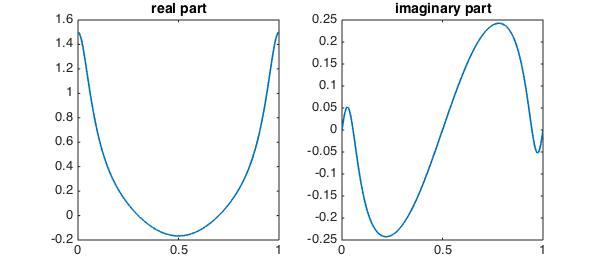
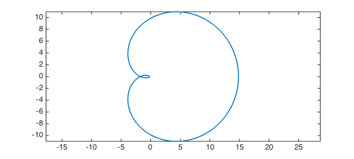

In this example, we compute a few integrals over closed contours in the complex plane using periodic chebfuns.
Consider a smooth and closed contour $\Gamma$ in the complex plane and let us say we want to compute $$ \int_{\Gamma} f(z) dz. $$ If we parametrize $\Gamma$ using a real varaible, say $t$ , then since the contour is closed, the intgrand becomes periodic in $t$ and we get $$ \int_{\Gamma} f(z) dz = \int_{a}^{b} f(z(t)) z'(t) dt. $$
All this can be done very efficiently in Chebfun, thanks to the Fourier technology which has been integrated with Chebfun's longstanding Chebyshev technology.
Here is a simple example. Consider the function:
ff = @(z) (1-2*z)/(z*(z-1)*(z-3));
Suppose we want to integrate this function on a circle of radius $2$. To do this in Chebfun's periodic mode, we first parametrize the circle:
z = chebfun(@(t) 2*exp(2*pi*1i*t), [0, 1], 'trig');
The integrand is then constructed by a simple composition:
f = ff(z) plot(f), axis equal
f =
chebfun column (1 smooth piece)
interval length endpoint values trig
[ 0, 1] 177 complex values
vertical scale = 1.5

This is how the real and imaginary parts of the integrand look on the contour:
subplot(1, 2, 1)
plot(real(f))
title('real part')
subplot(1, 2, 2)
plot(imag(f))
title('imaginary part')

To compute the integral, we recall that
$$ \int_{|z|=2} f(z) dz = \int_{0}^{1} f(z(t)) z'(t) dt. $$
We therefore first compute $z'(t)$:
dz = diff(z);
Computing the integral now could not be easier:
s = sum(f.*dz)
s = 0.000000000000001 + 5.235987755982992i
The true answer is $5 \pi i/3$, and we see that Chebfun has done a very good job:
norm(s - 5/3*pi*1i)
ans =
3.652628968987449e-15
Here is another example. Consider the sinc function
ff = @(z) sin(5*z)/(5*z);
This analytic function has a removable singularity at the origin. Therefore, the integral of the function on any closed contour should be zero according to Cauchy's theorem.
z = chebfun(@(t) exp(2*pi*1i*t), [0, 1], 'trig'); f = ff(z); dz = diff(z);
Here is a plot of the function:
clf plot(f), axis equal

And here is the integral, which is numerically zero:
s = sum(f.*dz)
s =
-4.874950607834530e-16 + 1.776356839400250e-14i
As our final example, we pick a function with an essential singularity at the origin and compute its integral on the unit circle.
ff = @(z) exp(1/z)*sin(1/z); z = chebfun(@(t) exp(2*pi*1i*t), [0, 1], 'trig'); f = ff(z); dz = diff(z); s = sum(f.*dz)
s = -0.000000000000000 + 6.283185307179584i
The result nicely matches $2\pi i$:
exact = 2i*pi
exact = 0.000000000000000 + 6.283185307179586i